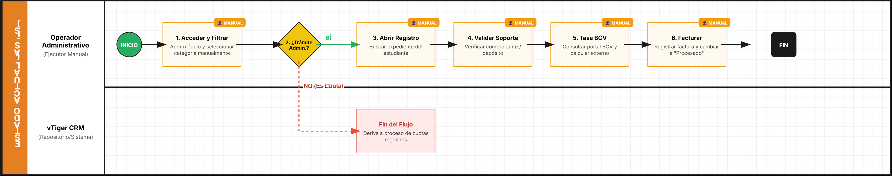

AS-IS (PROCESAMIENTO DE CUOTA) TO-BE
1. Identificación y Alcance del Proceso
Campo | Descripción | Contenido |
|---|---|---|
Nombre del Proceso | Registro y Conciliación de Pagos de Alumnos | Procesamiento de Cuotas |
Objetivo del Proceso | Validar pagos, calcular equivalencias en divisas y registrar facturas. | Validar pagos reportados, calcular equivalencia y registrarlos formalmente en el estado de cuenta. |
Punto de Inicio | Evento que desencadena el proceso. | El alumno reporta un pago y el registro ingresa al módulo "Payment Record" en estatus "No Procesado". |
Punto de Fin | Resultado final. | Registro actualizado a "Procesado" con factura generada y cambios guardados. |
Documento Fuente | Base del análisis. | Manual de Procedimiento Técnico: Procesamiento de Cuotas. |
2. Actores Involucrados (Pools y Lanes)
Actor (Lane) | Rol en el Proceso | Responsabilidades Clave |
|---|---|---|
Operador de CRM | Ejecutor / Validador | Verificar soportes, calcular tasas BCV, registrar pagos y actualizar estatus. |
Sistema (CRM vTiger) | Herramienta / Soporte | Repositorio de datos, módulo de facturación y almacenamiento de adjuntos. |
BCV (Externo) | Proveedor de Información | Fuente oficial para la tasa de cambio de la fecha del pago. |
3. Detalle de Actividades y Flujo AS-IS
No. | Actor (Lane) | Tarea / Actividad (Task) | Documentos / Sistemas Involucrados |
|---|---|---|---|
1 | Operador | Filtrar registros "No Procesados" | Módulo Payment Record |
2 | Operador | Validar soporte visual del pago | PDF / Imagen de comprobante |
3 | Operador | Extraer Monto, Fecha y Referencia | N/A |
4 | Operador | Consultar Tasa Oficial BCV histórica | Navegador / Web BCV |
5 | Operador | Calcular equivalencia (Bs / Tasa) | Calculadora |
6 | Operador | Acceder a Facturas del estudiante | Módulo Facturas CRM |
7 | Operador | Ejecutar "Record Payment" | Formulario Record Payment |
8 | Operador | ¿El pago cubre múltiples cuotas? (Gateway) | Lógica de negocio |
9 | Operador | Actualizar estatus a "Procesado" y "Tiene Factura" | Módulo Payment Record |
10 | Operador | Guardar cambios finales | CRM vTiger |
4. Reglas de Negocio y Puertas de Enlace (Gateways)
Puerta de Enlace Analizada 1: ¿El pago cubre más de una cuota?
- 🟢 Camino "SÍ":
- Criterio: El monto calculado cubre el valor de dos o más cuotas pendientes.
- Resultado: Repetir el proceso de "Record Payment" para la siguiente cuota antes de cerrar el registro.
- 🔴 Camino "NO":
- Criterio: El monto solo cubre una cuota o el saldo restante.
- Resultado: Proceder directamente a la Fase 3 (Cierre del proceso).
Puerta de Enlace Analizada 2: Vigencia de la Tasa de Cambio
- Regla: No se debe usar la tasa del día actual. Es obligatorio usar la tasa del BCV correspondiente a la fecha exacta en que el alumno realizó la transferencia.
5. Identificación Inicial de Puntos de Dolor
- Tarea Manual Repetitiva: La búsqueda manual de la tasa del BCV en el navegador y el uso de una calculadora externa incrementa el riesgo de error humano y tiempo de procesamiento.
- Duplicidad de Carga: El hecho de tener que repetir manualmente el registro si el alumno pagó 2 cuotas juntas es un proceso ineficiente.
- Riesgo de Datos: La transcripción manual de "Monto, Fecha y Referencia" desde un PDF al CRM puede generar discrepancias contables.

1. Identificación y Alcance del Proceso (TO-BE)
Campo | Contenido |
|---|---|
Nombre del Proceso | Gestión Automatizada de Conciliación y Facturación de Pagos |
Objetivo | Automatizar la validación de pagos y el cálculo de equivalencias cambiarias para garantizar integridad contable y rapidez en la facturación. |
Punto de Inicio | El alumno reporta un pago; el sistema detecta un nuevo registro en el módulo "Payment Record". |
Punto de Fin | Factura generada automáticamente, estatus actualizado a "Procesado" y notificación enviada al alumno. |
2. Actores Involucrados (Lanes)
- Operador de CRM: Actúa solo como supervisor en casos de discrepancias o excepciones que el sistema no pueda validar automáticamente.
- Sistema (vTiger CRM + Script de Automatización): Ejecutor principal. Se encarga de la extracción de datos, consultas a APIs externas y generación de documentos.
- API BCV (Externo): Proveedor de la tasa de cambio histórica de forma programática.
3. Detalle de Actividades (Flujo Optimizado)
No. | Actor | Tarea / Actividad | Tipo (BPMN) |
|---|---|---|---|
1 | Sistema | Detectar ingreso de "Payment Record" y extraer metadatos del soporte (OCR). | Service Task |
2 | Sistema | Consultar automáticamente la Tasa BCV histórica según la fecha del pago vía API. | Service Task |
3 | Sistema | Calcular equivalencia y validar si el monto cubre una o más cuotas. | Service Task |
4 | Sistema | ¿Datos coinciden con la deuda? (Gateway de Validación) | Gateway |
5a | Sistema | Si Coincide: Ejecutar "Record Payment" y generar factura en el CRM. | Service Task |
5b | Operador | Si No Coincide: Revisión manual de inconsistencias detectadas. | User Task |
6 | Sistema | Actualizar estatus a "Procesado" y enviar comprobante por email. | Service Task |
4. Gateways (Puntos de Decisión)
Puerta de Enlace 1: Validación Automática de Datos
- 🟢 Camino "ÉXITO": Los datos extraídos del comprobante (Monto/Referencia) coinciden con el reporte del alumno. El sistema procede a la facturación inmediata.
- 🔴 Camino "ERROR": Discrepancia detectada. El sistema escala la tarea al Operador de CRM para validación humana, evitando registros erróneos.
Puerta de Enlace 2: Cobertura de Cuotas Múltiples
- Regla: Si el remanente del pago tras liquidar una cuota es $> 0$, el sistema reinicia el ciclo de "Record Payment" automáticamente hasta agotar el saldo, eliminando la duplicidad de carga manual.
5. Beneficios y Mejoras Implementadas (ROI)
- Eliminación del Error Humano: Al integrar una API para la tasa del BCV y usar OCR para leer soportes, se elimina la transcripción manual y el uso de calculadoras externas.
- Reducción de Tiempo de Ciclo: El proceso pasa de minutos por registro a segundos, permitiendo procesar lotes de pagos masivos de forma instantánea.
- Trazabilidad Total: Cada paso automatizado queda registrado en los logs del CRM, permitiendo auditorías precisas sobre qué tasa se usó y en qué momento se generó la factura.